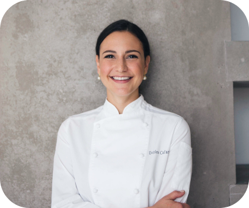

Acerca de nosotros
"Mi abuela criaba gallinas en casa con mucho amor, y con los huevos que éstas le proporcionaban, deleitaba a toda la familia con una deliciosa comida y unos exquisitos postres; tenía una gran pasión por la cocina y la repostería. En las tardes despues de llegar del colegio, junto con mi abuelita preparabamos deliciosos postres mi favorito era el pastel de chocolate, nos salia tan rico... como la extraño. Cada receta las recuerdo muy bien y otras las tengo anotadas para que no se me olviden, en cada receta se ve reflejado el amor y la dedicacion que le hemos puesto a estos increibles postres. Para estos postre le pusimos mucho esfuerzo, muchas veces hemos."
todo empezo Si bien es cierto que algunas veces las recetas no salían tal como se esperaba, Conservamos parte de la libreta con las recetas de mi abuela, esas recetas Ahora estas delicias llegan a vuestros hogares, si queréis degustarlas y disfrutarlas. Adaptamos algunos de los ingredientes y os los ofrecemos también sin azúcar, y con las opciones veganas,productos hechos con amor y cariño al alcance de todo el mundo.
Misión y visión
Nuestro desafío es ser reconocidos como una Pastelería Gourmet, por la calidad, excelencia y variedad de sus productos. " Nuestra Misión es elaborar productos de alta calidad, utilizando lo mejores ingredientes y buena técnica; innovando en sabores y recetas. Con el propósito de entregar a nuestros Clientes, una experiencia inolvidable de sabor, en nuestras recetas gourmet."
Valores
En conjunto con nuestros colaboradores, proveedores y clientes, vivimos los siguientes valores: Dar lo mejor de nosotros para cumplir con los altos estándares que esperan nuestros clientes y así obtener buenos resultados. Trabajar en equipo creando así una comunidad. Expresar ideas y pensamientos con honestidad, coherencia, sinceridad y transparencia. Colaborar con asociaciones de beneficencia destinando un presupuesto mensual para hacer donativos. Cuidar el medio ambiente separando los desechos que generamos de tal forma que se puedan reusar y/o reciclar más adelante.